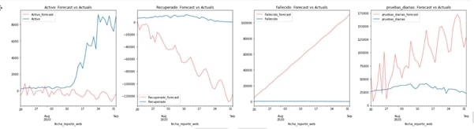

Pronóstico de la evolución de casos activos de SARS-CoV-2 en Colombia
MODELOS DE CORTO PLAZO
Para hallar un modelo de predicción de corto plazo se consideran 3 series de tiempo diferentes para modelar y pronosticar las variables de interés de cada ciudad, una serie para los casos nuevos, otra serie para los recuperados y otra para los fallecidos:
Para los casos confirmados y los casos nuevos por día se selecciona la columna fecha_reporte_web debido a que se compara y se identifica que es con dicha fecha que se publica y comunica la actualización diaria de los casos nuevos en los diferentes medios de comunicación.
Para los casos recuperados se selecciona la columna fecha_recuperado que es la que indica la fecha en la que el estado de la persona pasa a ser recuperado.
Para los casos fallecidos se selecciona la columna fecha_muerte que es la que indica la fecha en la que el estado de la persona pasa a ser fallecido.
Se decide partir cada serie de tiempo (casos activos, recuperados y fallecidos) en tres partes, en donde el 80% se usa para train, el 12% para test y un último 8% para forecast.
1.
Se realizó un primer ejercicio en el que se intentaron ajustar modelos autorregresivos integrados de promedios móviles ARIMA a las series de tiempo de interés correspondientes a las 5 principales ciudades de Colombia. Al graficar las series originales se identifica que estas no son estacionarias, por lo cual se aplica la transformación logaritmo natural y la primera diferenciación a cada una de ellas para poder ajustar los modelos ARIMA. Se usa un método de identificación automática y otro método gráfico para estimar el orden de los parámetros y se obtiene que el método automático es el que arroja mejores medidas de los Criterios de Información AIC y BIC en cada una de las tres series de tiempo para cada ciudad.
MEDELLÍN
Para la serie de los casos nuevos se obtiene un ARIMA(2,1,1)
Para la serie de los casos fallecidos se obtiene un ARIMA(0,1,1)
Para la serie de los casos recuperados se obtiene un ARIMA(0,1,3)
A pesar de que gráficamente se evidencia un buen ajuste de estos modelos en los tres conjuntos de entrenamiento, al realizar el análisis en los conjuntos de test y devolver la transformación logaritmo, se deduce que dichos modelos no son adecuados para el pronóstico de las series, por lo cual se intenta con otro método que consiste en ajustar primero una regresión polinómica a cada una de las series para capturar la tendencia y luego usar modelos ARIMA para los errores de ajuste. En cada uno de los ejercicios se realiza la transformación con PolynomialFeatures y sobre ella se prueba LinearRegression, Ridge Regression, Lasso y ElasticNet, pero no se obtiene un mejor resultado del error cuadrático medio, así que se procede a modelar los errores de LinearRegression
Para la serie de casos nuevos se realiza la transformación de grado 2 y resulta un ARIMA(3,0,1) para los errores
Para la serie de casos fallecidos se realiza la transformación de grado 3 y resulta un ARIMA(0,0,0) que indica que los errores no están correlacionados en el tiempo
Para la serie de casos recuperados se realiza la transformación de grado 2 y resulta un ARIMA(0,0,2) para los errores
Con el ejercicio anterior, nuevamente se identifica que los modelos poseen un buen ajuste en los tres conjuntos de entrenamiento pero al realizar el análisis en los conjuntos de test y devolver la transformación logaritmo, se encuentra que dichos modelos tampoco son adecuados para el pronóstico de las series.
Nuevos: en el mejor modelo de ambos ejercicios se obtiene MSE in train: 6529.15 y MSE in test: 652919.99
Muerte: en el mejor modelo de ambos ejercicios se obtiene MSE in train: 24.18 y MSE in test: 252.73
Recuperados: en el mejor modelo de ambos ejercicios se obtiene MSE in train: 1299.43 y MSE in test: 354801.09
BOGOTÁ
Para la serie de los casos nuevos se obtiene un ARIMA(0,1,1)
Para la serie de los casos fallecidos se obtiene un ARIMA(0,1,1)
Para la serie de los casos recuperados se obtiene un ARIMA(0,1,1)
A pesar de que gráficamente se evidencia un buen ajuste de estos modelos en los tres conjuntos de entrenamiento, al realizar el análisis en los conjuntos de test y devolver la transformación logaritmo, se deduce que dichos modelos no son adecuados para el pronóstico de las series, por lo cual se intenta con otro método que consiste en ajustar primero una regresión polinómica a cada una de las series para capturar la tendencia y luego usar modelos ARIMA para los errores de ajuste. En cada uno de los ejercicios se realiza la transformación con PolynomialFeatures y sobre ella se prueba LinearRegression, Ridge Regression, Lasso y ElasticNet, pero no se obtiene un mejor resultado del error cuadrático medio, así que se procede a modelar los errores de LinearRegression
Para la serie de casos nuevos se realiza la transformación de grado 2 y resulta un ARIMA(1,0,1) para los errores
Para la serie de casos fallecidos se realiza la transformación de grado 3 y resulta un ARIMA(0,0,0) que indica que los errores no están correlacionados en el tiempo
Para la serie de casos recuperados se realiza la transformación de grado 2 y resulta un ARIMA(2,0,2) para los errores
Con el ejercicio anterior, nuevamente se identifica que los modelos poseen un buen ajuste en los tres conjuntos de entrenamiento pero al realizar el análisis en los conjuntos de test y devolver la transformación logaritmo, se encuentra que dichos modelos tampoco son adecuados para el pronóstico de las series.
Nuevos: en el mejor modelo de ambos ejercicios se obtiene MSE in train: 56477.06 y MSE in test: 9851056.13
Muerte: en el mejor modelo de ambos ejercicios se obtiene MSE in train: 40.54 y MSE in test: 9374.72
Recuperados: en el mejor modelo de ambos ejercicios se obtiene MSE in train: 34380.05 y MSE in test: 3943584.49
BARRANQUILLA
Para la serie de los casos nuevos se obtiene un ARIMA(0,1,1)
Para la serie de los casos fallecidos se obtiene un ARIMA(0 2,2)
Para la serie de los casos recuperados se obtiene un ARIMA(0,1,1)
A pesar de que gráficamente se evidencia un buen ajuste de estos modelos en los tres conjuntos de entrenamiento, al realizar el análisis en los conjuntos de test y devolver la transformación logaritmo, se deduce que dichos modelos no son adecuados para el pronóstico de las series, por lo cual se intenta con otro método que consiste en ajustar primero una regresión polinómica a cada una de las series para capturar la tendencia y luego usar modelos ARIMA para los errores de ajuste. En cada uno de los ejercicios se realiza la transformación con PolynomialFeatures y sobre ella se prueba LinearRegression, Ridge Regression, Lasso y ElasticNet, pero no se obtiene un mejor resultado del error cuadrático medio, así que se procede a modelar los errores de LinearRegression
Para la serie de casos nuevos se realiza la transformación de grado 2 y resulta un ARIMA(1,0,1) para los errores
Para la serie de casos fallecidos se realiza la transformación de grado 3 y resulta un ARIMA(1,0,2) para los errores
Para la serie de casos recuperados se realiza la transformación de grado 3 y resulta un ARIMA(0,0,1) para los errores
Con el ejercicio anterior, nuevamente se identifica que los modelos poseen un buen ajuste en los tres conjuntos de entrenamiento pero al realizar el análisis en los conjuntos de test y devolver la transformación logaritmo, se encuentra que dichos modelos tampoco son adecuados para el pronóstico de las series.
Nuevos: en el mejor modelo de ambos ejercicios se obtiene MSE in train: 37293.12 y MSE in test: 290718.81
Muerte: en el mejor modelo de ambos ejercicios se obtiene MSE in train: 21.13 y MSE in test: 7.12
Recuperados: en el mejor modelo de ambos ejercicios se obtiene MSE in train: 20031.59 y MSE in test: 502806.42
CARTAGENA
Para la serie de los casos nuevos se obtiene un ARIMA(1,1,1)
Para la serie de los casos fallecidos se obtiene un ARIMA(0,1,3)
Para la serie de los casos recuperados se obtiene un ARIMA(0,1,1)
A pesar de que gráficamente se evidencia un buen ajuste de estos modelos en los tres conjuntos de entrenamiento, al realizar el análisis en los conjuntos de test y devolver la transformación logaritmo, se deduce que dichos modelos no son adecuados para el pronóstico de las series, por lo cual se intenta con otro método que consiste en ajustar primero una regresión polinómica a cada una de las series para capturar la tendencia y luego usar modelos ARIMA para los errores de ajuste. En cada uno de los ejercicios se realiza la transformación con PolynomialFeatures y sobre ella se prueba LinearRegression, Ridge Regression, Lasso y ElasticNet, pero no se obtiene un mejor resultado del error cuadrático medio, así que se procede a modelar los errores de LinearRegression
Para la serie de casos nuevos se realiza la transformación de grado 2 y resulta un ARIMA(1,0,2) para los errores
Para la serie de casos fallecidos se realiza la transformación de grado 3 y resulta un ARIMA(0,0,0) que indica que los errores no están correlacionados en el tiempo
Para la serie de casos recuperados se realiza la transformación de grado 3 y resulta un ARIMA(3,0,1) para los errores
Con el ejercicio anterior, nuevamente se identifica que los modelos poseen un buen ajuste en los tres conjuntos de entrenamiento pero al realizar el análisis en los conjuntos de test y devolver la transformación logaritmo, se encuentra que dichos modelos tampoco son adecuados para el pronóstico de las series.
Nuevos: en el mejor modelo de ambos ejercicios se obtiene MSE in train: 5719.86 y MSE in test: 39906.96
Muerte: en el mejor modelo de ambos ejercicios se obtiene MSE in train: 5.57 y MSE in test: 2.68
Recuperados: en el mejor modelo de ambos ejercicios se obtiene MSE in train: 2628.06 y MSE in test: 111340.88
CALI
Para la serie de los casos nuevos se obtiene un ARIMA(0,1,1)
Para la serie de los casos fallecidos se obtiene un ARIMA(0,1,1)
Para la serie de los casos recuperados se obtiene un ARIMA(0,1,1)
A pesar de que gráficamente se evidencia un buen ajuste de estos modelos en los tres conjuntos de entrenamiento, al realizar el análisis en los conjuntos de test y devolver la transformación logaritmo, se deduce que dichos modelos no son adecuados para el pronóstico de las series, por lo cual se intenta con otro método que consiste en ajustar primero una regresión polinómica a cada una de las series para capturar la tendencia y luego usar modelos ARIMA para los errores de ajuste. En cada uno de los ejercicios se realiza la transformación con PolynomialFeatures y sobre ella se prueba LinearRegression, Ridge Regression, Lasso y ElasticNet, pero no se obtiene un mejor resultado del error cuadrático medio, así que se procede a modelar los errores de LinearRegression
Para la serie de casos nuevos se realiza la transformación de grado 2 y resulta un ARIMA(0,0,0) que indica que los errores no están correlacionados en el tiempo
Para la serie de casos fallecidos se realiza la transformación de grado 3 y resulta un ARIMA(0,0,0) que indica que los errores no están correlacionados en el tiempo
Para la serie de casos recuperados se realiza la transformación de grado 3 y resulta un ARIMA(0,0,1) para los errores
Con el ejercicio anterior, nuevamente se identifica que los modelos poseen un buen ajuste en los tres conjuntos de entrenamiento pero al realizar el análisis en los conjuntos de test y devolver la transformación logaritmo, se encuentra que dichos modelos tampoco son adecuados para el pronóstico de las series.
Nuevos: en el mejor modelo de ambos ejercicios se obtiene MSE in train: 4230.22 y MSE in test: 138879.43
Muerte: en el mejor modelo de ambos ejercicios se obtiene MSE in train: 8.59 y MSE in test: 227.34
Recuperados: en el mejor modelo de ambos ejercicios se obtiene MSE in train: 1212.37 y MSE in test: 116514.97
2.
Posteriormente, se decide probar con modelo VAR (vector autorregresivo), en donde el objetivo es caracterizar las interacciones simultáneas entre las variables involucradas en el modelo: casos confirmados, nuevos casos, activos, recuperados, muertes y número de pruebas realizadas. El VAR es un modelo formado por un sistema de ecuaciones de forma reducida sin restringir. Que sean ecuaciones de forma reducida quiere decir que los valores contemporáneos de las variables del modelo no aparecen como variables explicativas en ninguna de las ecuaciones. Por el contrario, el conjunto de variables explicativas de cada ecuación está constituido por un bloque de retardos de cada una de las variables del modelo. Que sean ecuaciones no restringidas significa que aparece en cada una de ellas el mismo grupo de variables explicativas. Los conjuntos de datos utilizados para este modelo son: consolidado de los casos positivos de COVID 19 en Colombia reportados por el Instituto Nacional de Salud (ya descrito con anterioridad) y Pruebas PCR procesadas de COVID-19 en Colombia reportado por el Instituto Nacional de Salud que contiene las columnas fecha y número de muestras acumuladas.
Antes de implementar el modelo, la literatura sugiere realizar las siguientes pruebas:
Test de causalidad de Wiener-Granger: prueba estadística para determinar si una serie temporal puede predecir a otra. Se basa en la idea de que si una serie temporal X causa otra Y, los modelos de Y en los que se emplean datos retrasados de X e Y deben funcionar mejor basados únicamente en datos retrasados de Y. La prueba de hipótesis nula es que los coeficientes de los valores pasados correspondientes son cero, es decir, X no causa Y. Al aplicar el test a los datos se encuentra que algunos valores P son mayores que el nivel de significancia elegido (0.05), lo que implica que la hipótesis nula no puede rechazarse.
Prueba de raíz unitaria: prueba si una variable de serie de tiempo no es estacionaria y posee una raíz unitaria. La hipótesis nula se define generalmente como la presencia de una raíz unitaria y la hipótesis alternativa es estacionariedad, tendencia estacionaria o raíz explosiva, dependiendo de la prueba utilizada. En el conjunto de datos se encuentra evidencia débil para rechazar la hipótesis nula, por lo tanto, se ejecuta la primera y segunda diferencia y se logra que las 4 variables utilizadas sean estacionarias.
Test de Autocorrelación de residuos: este test arroja un valor “d” entre 0 y 4 que indica: d=2 indica que no hay autocorrelación. d<2, hay evidencia de correlación serial positiva. d>2, los sucesivos términos de error están correlacionados negativamente. En regresiones, esto puede implicar una subestimación del nivel de significancia estadística. Al aplicar el test se obtiene que todos los d son valores por encima de 2.
Posteriormente se divide el conjunto de datos en: entrenamiento (75%) y pruebas (25%) y se procede a realizar la predicción a nivel nacional, obteniendo los siguientes resultados (se muestra de manera gráfica para facilitar su interpretación)

Se obtienen las siguientes métricas:
Activos: MAE:3261.04 y RMSE:4756.77
Recuperados: MAE:67550.05 y RMSE:75930.62
Fallecidos: MAE:57042.59 y RMSE:64969.87
Pruebas Diarias: MAE:63073.86 y RMSE:73838.78
Después de revisar los resultados a nivel general, se concluye que este modelo tampoco realiza una buena predicción de las series en cuestión.
3.
Luego, se realiza otro ejercicio y se intentan modelos secuenciales de Keras para cada una de las series en cada una de las ciudades. Cada modelo secuencial se construye con 4 capas Long short-term memory (LSTM) y 1 capa de salida Dense y se compila con función de pérdida de error medio cuadrático y optimizador ‘adam’ que es una extensión del gradiente descendente estocástico. Se ajusta el modelo con el conjunto de entrenamiento, se incorpora la optimización EarlyStopping para los epochs y se varía el número de batch_size para verificar si mejora el rendimiento. La salida de este tipo de modelos es un pronóstico de un paso tomando como entrada cierto número de valores reales pasados, en este caso, se decide tomar 7 valores pasados ya que se identifica que puede haber cierto factor estacional derivado de los días de la semana. Además, para obtener el pronóstico de los días posteriores en los que no se tiene valor real, se toma el pronóstico anterior en el arreglo de entrada, es decir, se hace pronóstico sobre el pronóstico.
MEDELLÍN
Primero, se realiza el escalamiento de los datos con MinMaxScaler, luego, al modelo Sequential se le incorpora EarlyStopping para controlar los epochs, sin embargo, no se obtiene un mejor rendimiento en el error cuadrático medio MSE ni en el conjunto de train ni en el conjunto de test, así que se fija un valor de 150 epochs. Para el batch_size se prueban tres valores diferentes: 32, 64 y 128 y se identifica mejor medida del MSE con 32, por lo que se fija dicho valor. Después de aplicar el modelo, se devuelven los datos a la escala original y se obtienen las medidas de MSE con las que se compara el rendimiento
Para los nuevos se tiene MSE in train: 5723.15 y MSE in test: 96202.89
Para los fallecidos se tiene MSE in train: 17.33 y MSE in test: 31.25
Para los recuperados se tiene MSE in train: 610.14 y MSE in test: 89076.81
BOGOTÁ
Primero, se realiza el escalamiento de los datos con MinMaxScaler, luego, al modelo Sequential se le incorpora EarlyStopping para controlar los epochs, sin embargo, no se obtiene un mejor rendimiento en el error cuadrático medio MSE ni en el conjunto de train ni en el conjunto de test, así que se fija un valor de 150 epochs. Para el batch_size se prueban tres valores diferentes: 32, 64 y 128 y se identifica mejor medida del MSE con 32, por lo que se fija dicho valor. Después de aplicar el modelo, se devuelven los datos a la escala original y se obtienen las medidas de MSE con las que se compara el rendimiento
Para los nuevos se tiene MSE in train: 72640.23 y MSE in test: 988153.81
Para los fallecidos se tiene MSE in train: 33.93 y MSE in test: 337.47
Para los recuperados se tiene MSE in train: 23866.35 y MSE in test: 2520490.80
BARRANQUILLA
Primero, se realiza el escalamiento de los datos con MinMaxScaler, luego, al modelo Sequential se le incorpora EarlyStopping para controlar los epochs, sin embargo, no se obtiene un mejor rendimiento en el error cuadrático medio MSE ni en el conjunto de train ni en el conjunto de test, así que se fija un valor de 150 epochs. Para el batch_size se prueban tres valores diferentes: 32, 64 y 128 y se identifica mejor medida del MSE con 32, por lo que se fija dicho valor. Después de aplicar el modelo, se devuelven los datos a la escala original y se obtienen las medidas de MSE con las que se compara el rendimiento
Para los nuevos se tiene MSE in train: 34165.18 y MSE in test: 32577.46
Para los fallecidos se tiene MSE in train: 19.89 y MSE in test: 5.29
Para los recuperados se tiene MSE in train: 13582.96 y MSE in test: 40979.16
CARTAGENA
Primero, se realiza el escalamiento de los datos con MinMaxScaler, luego, al modelo Sequential se le incorpora EarlyStopping para controlar los epochs, sin embargo, no se obtiene un mejor rendimiento en el error cuadrático medio MSE ni en el conjunto de train ni en el conjunto de test, así que se fija un valor de 150 epochs. Para el batch_size se prueban tres valores diferentes: 32, 64 y 128 y se identifica mejor medida del MSE con 32, por lo que se fija dicho valor. Después de aplicar el modelo, se devuelven los datos a la escala original y se obtienen las medidas de MSE con las que se compara el rendimiento
Para los nuevos se tiene MSE in train: 4075.32 y MSE in test: 6770.06
Para los fallecidos se tiene MSE in train: 5.28 y MSE in test: 2.47
Para los recuperados se tiene MSE in train: 2325.11 y MSE in test: 3641.74
CALI
Primero, se realiza el escalamiento de los datos con MinMaxScaler, luego, al modelo Sequential se le incorpora EarlyStopping para controlar los epochs, sin embargo, no se obtiene un mejor rendimiento en el error cuadrático medio MSE ni en el conjunto de train ni en el conjunto de test, así que se fija un valor de 150 epochs. Para el batch_size se prueban tres valores diferentes: 32, 64 y 128 y se identifica mejor medida del MSE con 32, por lo que se fija dicho valor. Después de aplicar el modelo, se devuelven los datos a la escala original y se obtienen las medidas de MSE con las que se compara el rendimiento
Para los nuevos se tiene MSE in train: 4355.33 y MSE in test: 97475.84
Para los fallecidos se tiene MSE in train: 5.98 y MSE in test: 44.98
Para los recuperados se tiene MSE in train: 1464.26 y MSE in test: 143459.41
Se evidencia que en este caso, los modelos Sequential con LSTM son los que mejor rendimiento presentan en cuanto a ajuste y validación para las series de tiempo de interés del Covid, ya que son estos los que arrojan menores medidas de MSE de todos ejercicios realizados, por lo tanto, estos modelos son los elegidos para realizar el pronóstico a corto plazo.
Se procede entonces a guardar cada uno de los modelos Sequential correspondientes a cada una de las series de las ciudades por medio de load_model disponible en Keras, para luego generar el script que extraiga los últimos 7 valores publicados de cada serie y los introduzca en el modelo para generar el pronóstico de los siguientes 14 días mediante la metodología ya mencionada de pronóstico sobre pronóstico.
Se evidencia que los modelos de corto plazo tienden a empeorar los pronósticos a medida que el tiempo de predicción es más largo, y es por ello que se hace necesario incorporar otros modelos que permitan obtener una mejor precisión con un horizonte de tiempo mayor.
MODELOS DE MEDIANO PLAZO
Ante toda predicción es importante tener en cuenta la naturaleza de los datos y del problema en cuestión. En este caso, al tratarse de una situación que involucra una epidemia, se hace importante considerar modelos que logren capturar el funcionamiento inherente de la propagación del virus para así lograr obtener resultados precisos que serían sumamente difíciles de alcanzar con otro tipo de modelos matemáticos.
Los modelos epidemiológicos se definen como una representación matemática o lógica de la epidemiología de la transmisión de la enfermedad y de los procesos asociados a ella, dichos modelos permiten evaluar la eficacia de las medidas de control y calcular la futura magnitud, duración y alcance geográfico de una enfermedad. El modelo SIR (Susceptibles, Infectados y Recuperados) es un modelo epidemiológico simple capaz de capturar muchas de las características típicas de los brotes epidémicos; el modelo se basa en el supuesto de una población constante en la que los individuos van cambiando de estado hasta desarrollar inmunidad a la enfermedad (de susceptibles a infectados y posteriormente a recuperados o fallecidos). La variabilidad de dichos estados depende de la tasa de transmisión efectiva denominada con el parámetro 𝜷 y la tasa de recuperación denominada con el parámetro 𝜸.
El cálculo de la tasa de recuperación se realiza a partir del tiempo de latencia de la enfermedad obtenido de los datos. Tiempo de latencia: número de días que tarda una persona en recuperarse del virus
𝜸 = 1 / tiempo de latencia
Para establecer la tasa de transmisión, se realizó inicialmente el cálculo de R0 que está definido como el número promedio de casos secundarios que surgen a partir de un caso primario en una población totalmente susceptible. Para ello, fueron tenidos en cuenta tres escenarios:
Escenario 1: Aislamiento preventivo obligatorio. Periodo comprendido entre el 24 de Marzo de 2020 y el 31 de Mayo de 2020
Escenario 2: Cuarentenas sectorizadas y/o toques de queda. Periodo comprendido entre el 01 de Julio de 2020 y el 14 de Agosto 2020
Escenario 3: Reactivación económica. Periodo a partir del 23 de Agosto de 2020 aproximadamente
La literatura define R0 = β / 𝜸 por lo tanto, es posible despejar la tasa de transmisión de la siguiente manera β = R0 * 𝜸
Al analizar cada uno de los modelos, se concluye que el R0 del escenario 2 permite obtener una tasa de transmisión efectiva del virus más ajustada a la realidad de las cinco ciudades.
Una vez se definen los parámetros β y 𝜸 se utilizan las siguientes ecuaciones diferenciales:
Susceptibles
Infectados
Recuperados
Cada una determina de manera acumulada la cantidad de infectados y recuperados, por lo cual se realiza la resta entre el día t y el día t-1 para obtener los datos correspondientes al día t.
Teniendo en cuenta que el modelo no contempla los fallecidos como una ecuación independiente, se calcula la tasa de letalidad para cada ciudad como el total de fallecidos / total de infectados. Dicha tasa se aplica posteriormente sobre la cantidad de infectados para determinar los fallecidos por día.
A continucación se presenta un resumen de los parámetros considerados
Con el fin de reportar resultados acordes a los modelos presentados tanto de corto como de largo plazo, se decide realizar una ponderación de ambas salidas en donde los pesos de cada resultado fueron definidos por medio de iteraciones manuales con el objetivo de equilibrar y obtener ajustes cercanos a los registros históricos disponibles.
Como observación preeliminar se concluye que aunque las medidas de aislamiento social permiten contener las cifras de contagios diarios para ir reduciendo el pico de la infección, además de mejorar las condiciones de disponibilidad de recursos hospitalarios, ante las medidas de reactivación económica implementadas en las diferentes ciudades, se estima que el número de contagios diarios se incremente.